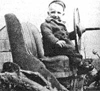

Issue # 60 - November/December 1979
"How did you ever get the idea for THE Mother Earth News(restricted)?"
If I've heard that question once during the past ten years, I've heard it ten thousand times. And my answer is always the same: "Given the way I was raised, it would have been far more surprising if I hadn't wound up devoting my life to something like MOTHER."
I was born in a small north-central Indiana farming community on July 21, 1937. It was a very good place and time to be birthed if your destiny somehow involved the launching of a back-to-basics, you-can-take-charge-of-your-life, this-planet-is-all-we've-got magazine.
For one reason, not too many babies were being made back then in the closing days of the Great Depression. And so my age group has always been in far greater demand than have the floodtide of World War II children and the other burgeoning waves of humanity which have followed. More doors have been opened for us, each of us has tended to move up more quickly in his or her chosen field, and we have been generally more "successful" faster while retaining more of our individual identity than have those packed into the masses born later.
No one, in other words, has to give me any powerful arguments about the benefits of population control: I've lived those benefits firsthand. I know that we're all better off when there are fewer of us competing for the earth's finite resources.
Nor-thanks again to the Depression and the World War which followed-does anyone have to convince me of the wisdom of individual and family self-reliance and self-sufficiency. Others-those who were not self-reliant and self-sufficient-may recall the late 30's and early 40's as a time of bread lines, not enough to eat, ration coupons, and black markets.
My earliest memories, on the other hand, are of barnyards full of pigs and chickens and sheep and ducks and geese and cattle and other animals . . . a great-uncle plowing with horses that didn't need scarce gasoline or rubber tires .. . gardens overflowing with produce ... Sheep's Nose apples and crisp pears so big that a knee-high tad had to hold them in both hands to eat 'em . . . the extremely serviceable homemade tractor my father designed and built from "junk" when inferior farm tractors were not available from the manufacturers at any price ... pantry shelves groaning with homecanned fruits and vegetables and meats . . . home-cured hams hanging in frosty attics . . . gigantic crocks of homemade dills and jars of "bread and butter" pickles and mountains of potatoes and other root crops stored away in cool, damp cellars for the winter . . . so much fresh milk and cream and butter from the family cows that we fed the surplus to a few homestead hogs as a matter of course.
What depression? What war shortages? Maybe my family-like a lot of others didn't handle much cash money in a year's time . . . but I dang sure never went hungry back there in the closing days of the 30's or the first half of the 40's.
Quite the contrary. I grew up surrounded by a good plenty of everything I really needed. And, once my basic "needs" were fulfilled, I had only to look as far as my mother and father for day-by-day examples of how to satisfy every human being's more extravagant "wants".
The only electricity I used until I was seven years old came (when the wind blew) from a windplant that my dad designed and built himself. He also designed and hand-wound a monster self-contained portable welder that could be pulled to any part of the farm for in-the-field jobs . . . personally built an addition onto our small barn . . . made tremendously large livestock watering tanks from old junked service station storage containers (and much smaller hog waterers from salvaged water heater tanks) . . . and poured and enclosed a huge concrete porch across the front of our house . . . among other projects.
Later-after we'd moved to a larger but extremely run-down farm-my mother and father used their native wisdom and a lot of hard labor to restore acreage that a USDA "expert" said could not be restored to fertility (I learned early that you'll never go far wrong if you operate on the premise that All Government Bureaucrats Are All Wrong All The Time) ... completely remodeled a very big and very dilapidated house . . . reconstructed a number of-tumbledown sheds ... built new corncribs and other buildings . . . installed a modern water system and indoor plumbing ... grubbed out Osage orange hedgerows and replaced them with good woven-wire fences . . . terraced raw clay hillsides into slopes that would no longer wash . . . and otherwise transformed one of the most worthless farms in the state into some of Indiana's finest acreage.
In short, I had good reason to grow up believing that anybody can do anything that he or she really wants to do by just rolling up his or her sleeves and getting on with it. No matter what some arrogantly stupid bureaucrat (years of observing the breed from as great a distance as possible has convinced me that "there ain't hardly no other kind") might think or say about the situation.
Yep. I'm awfully lucky. It just happened to be my great good fortune to get myself born into and raised up in the last tattered remnants of the old-time, North American, small family farm way of life.
The Genuine Article. That magical time and place in history when a man's word was his bond ... everyone-from the youngest toddler to the oldest great-grandpa-had his or her chores to do, and did them ... the strong helped the weak ... people stayed married once they got that way ... everyone realized that the elderly knew more than the tads and, therefore, should be listened to . . . a family worked, played, and prayed together . . . and people could go away and leave their homes unlocked for weeks at a time and find nothing out of place when they returned.
Perhaps that vanishing age on which I was weaned can be summed up this way: It was a time when individuals spent their time concentrating on their responsibilities . . . instead of endlessly crying about "rights". It was a time when individuals tried to make the world a better place in which to live ... by, first and foremost, struggling to improve themselves instead of shrilly demanding that others live up to their ideals. (Dear God: I know that the Gloria Steinems and the Ralph Naders and the Jane Fondas of the world mean well . . . but they do get tiresome after a while, especially when they have such big warts right on the ends of their own noses.)
Most of all, it was still-out there in the country, 40 years ago-a time of seamless living. Our lives were all of a piece back then. Our work was our play and our play was our work. And we did what we did with the good common sense and boundless energies and bursting pride and total involvement that only free men and women can bring to what they do when they're left alone to look out for their own best interests and the best interests of the land that feeds them.
We didn't do what we did when I was growing up because anyone told us to. Or because some do-gooder or college professor or bureaucrat had convinced us we should. Or because we had been presented with a degree or certificate or license which gave us the authority. Or because some industrial work standard or union rule made us do things that way.
We did what we did when I was growing up because we were doing it for ourselves and because we wanted to do it and because we had organized the way we lived so that each and every one of us-young, prime-of-life, or old-could, and did, make a meaningful contribution to the common good. We didn't punch anybody's time clock and we didn't conform to anyone's production standards and we didn't arbitrarily set generation against generation by shipping our youngsters off to day care centers or banishing the old folks to retirement "villages".
Instead, children-as soon as they could navigate passably well under their own steam-were welcomed into the company of adults where, as a matter of course, they soon learned the joy of doing practical tasks in a naturally accomplished manner. By the time I was three, for example, I was proudly steering a barely creeping homemade tractor across the fields while my father forked manure off the wagon that was hooked on behind.
Furthermore, it was obvious-to me as well as to anyone else-that any young man who could "drive" a tractor the way I was doing probably could help gather the eggs, feed the chickens, carry in kindling, pick up his own, clothes and toys (frequently wooden ones made by his father or stuffed animals sewed together by his mom), and otherwise lend a hand around the homestead. Which meant that one thing just naturally led to another and, almost by osmosis, I and other farm boys and girls of my era just as naturally grew up knowing how to do-and doing-all kinds of useful things.
That's simply the way it is when your work is your play and your play is your work. Your life is all yours and all of a piece and you have no one to answer to or hide behind but yourself and you're free to go just as far and just as fast as your native talents and energies and desires will allow. Which is a whole lot more satisfying than having your existence busted up by the "experts" into little chunks, neatly packaged in airtight boxes labeled "work" and "play" and then fed back to you piecemeal at some federally mandated pace.
When I was growing up, no one had to tell me or my peers that it was time for us to take on a more complicated chore or move up to a heavier form of labor. And nobody had to nag us about it either. We just did what we did because we knew it was time for us to start doing it and, besides, we were all straining at the bit and looking forward to the increased responsibility and resulting status anyway.
And the really beautiful thing about organizing your life this way is that the whole concept works just as well in the second half as it does during the first. Everybody understands, as the younger bucks and does begin to assume more of the tougher tasks around the place, that . . . well, it's time for you older folks to take it a little easier anyhow. Besides, someone needs to spend more time teaching the grandchildren how to tie their shoes and gather the eggs and chop the kindling and drive the tractor and, maybe, catch a fish or two or put a couple of rabbits in the pot. And who can do that better than you, since you've had more experience at all these things than anyone else around?
It's a good way to live. And when you do live that self-contained and that self-reliant ... well, it's obvious that you don't have to go very far afield when you really want to kick over the traces and "have yourself a celebrate". A good many of my childhood entertainments came directly from the community in which I lived, and I helped harvest and process them just as naturally as I helped put food on the table.
The world I grew up in was still a world of hand-cranked wild strawberry ice cream produced and served at country church socials ... occasional husking bees, square dances, or fodder shocking "parties" ... and rural school suppers which featured so many home-cooked dishes piled up on 100 running feet of sturdy serving tables that more than one of those tables was left with a permanent bow in its top and bend in its legs.
During the spring, summer, and fall we mostly amused ourselves individually (when we set out to do so on purpose) outdoors. Rearranging the flower garden or trimming the grape arbor. Or climbing (and sometimes falling out of) trees. Or foraging mushrooms, greens, berries, black walnuts and hickory nuts, persimmons, and paw-paws in the woods. Or hunting and fishing . . . or making willow whistles or "flip Jacks" ... or throwing horseshoes or playing croquet . . . or riding the calves when the grown-ups weren't around ... or (on rainy days) by "doing stunts" in the haymow.
And sometimes in the winter there was ice skating on the river or someone's pond and sledding down the Big Hill in the moonlight. Mostly, though, December and January and February evenings found the whole family gathered around the wood-burning cookstove in the kitchen or the living room's coal-burner, occupied with leatherwork (starting with the resoling of our shoes) and knitting and crocheting and whittling and other handcrafts . . . or -perhaps-reading or working a puzzle or playing checkers, Chinese checkers, Rook, or a game of dominoes.
Sometimes we even engaged in these activities while the wonderful imagination-stretching world of Fibber McGee and Molly, Inner Sanctum Mysteries, Amos and Andy, Judy Canova, Edgar Bergen and Charlie McCarthy, Lux Radio Theater, The Great Gilder-sleeve, Duffy's Tavern, and other network radio programs played in the background.
I should mention, too, that almost every radio receiver in use back in those days had one or more "police", "amateur", "phone", "code", "ship", or "shortwave" bands on it in addition to its "standard broadcast" dial. Which meant that, with a mere twist of the fingers, you could instantly transport yourself (on a good night) to Germany, Holland, Switzerland, France, South America, Australia, Japan, some indefinite spot on the high seas . . . or to a "ham" operator's back room somewhere in Montana or above the Arctic Circle. That, of course, was heady stuff and gave you a certain firsthand "feel" for the larger world that watching Laverne and Shirley today on TV can never duplicate.
For that matter, just tuning across "standard broadcast" late at night in the 30's, 40's, and early 50's was an adventurous exploration of the regional tastes and mores of the North American continent. No, you didn't get the same, monotonous, prepackaged "top of the charts" programming from coast to coast in those days. You got a rich texture that was fascinating, exciting, truly entertaining, and incredibly educational.
There were folk music and dialects from all over the world on the CBC (Canadian Broadcasting Company), for instance. Stations in the St. Paul/Minneapolis area were good for boisterous accordion tunes from groups with names like "Whoopie John's Polka Band". Cincinnati's WLW (a "clear channel station") was famous for years for its late-night Moon River program. And if WSM in Nashville was "the home of the Grand Ole Opry", most mid westerners knew that Captain Stubby and the Buccaneers, the Hoosier Hotshots, and Lulabelle and Scotty were serving up the same kind of music on Chicago's WLS.
WWVA (Wheeling, West Virginia) was the biggie for what was then politely called "race" music, and its never-ending commercials for hair straighteners made it clear that the station was broadcasting to a primarily black audience. And maybe it was . . . but some of us white folks used to tune in WWVA's Howlin' Wolf, Bo Diddley, and Muddy Waters records years before Elvis Presley bastardized Rhythm and Blues into Rock-and-Roll and "brought" it to the Caucasian audience.
WJR ("The Great Voice of the Great Lakes" in Detroit), CKLW (Windsor, Ontario), WBZ (Boston), KMOX (St. Louis), and a hundred other stations-each with distinctly different and regionally flavored programming-added to the feast. And the dessert was always WWL in New Orleans. If you had a taste-as I did-for straight-and-uncut Delta Blues, Cajun fiddle tunes played tight enough to hold water, and two-beat Dixieland going back to the earliest records ever cut on the subject ... WWL ("Loyola University of the South, broadcasting from the Roosevelt Hotel") was in a class by itself. It's too bad it don't play that kind of music no more.
And the real, basic, bedrock reason it's too bad that WWL no longer broadcasts identifiably Louisiana music to half the continent every night . . . and that most of us now sit around vacantly watching pap on the boob tube each evening, instead of laughing and talking to each other while we knit our own sweaters and whittle out our own art objects . . . and that very few of us now make our work our play and our play our work . . . and that only a handful of us even understand the inner workings of a car or tractor (let alone are capable of building one that is better than any you can buy, using only simple hand tools) . . . and that most of us now spend our days doing what we're told, instead of what our souls cry out for us to do . . . is the very reason THE Mother Earth News(restricted) was founded on a $1,500 shoestring ten years ago.
I just got tired of listening to the slick politicians and industrial public relations men and labor union spokesmen and other representatives of the vested interests of our society telling me how much better my life was getting every day .. . when I knew damn well it wasn't getting better at all. It was, in fact, getting steadily worse as the unholy trio of modern society-Big Government, Big Business, and Big Labor - increasingly raped me of what was rightfully mine and then charged me more than I was capable of paying to get little corners of it back.
Listen. Just like you, I'm not as stupid as the Big Three think I am. I can remember what it was like to work for myself and not have the government confiscate over 40% of my earnings. I've eaten real food fresh out of the garden and I know it tastes better and is more nourishing than anything that's ever been produced in a factory, wrapped in plastic and styrofoam, and then displayed on a supermarket shelf. I know that my life was far richer when I could tune in a hundred distinctly different kinds of programming on my radio instead of the same deadening top-40 trash anywhere in the country. I am absolutely certain that 99.9% of all television programming broadcast in this country-yes, including PBS farede-grades me and everyone else in our society by giving us a jaded and distorted view of the world and diminishing us rather than enlarging us in any way. And that says nothing at all about commercial TV's unending barrage of commercials for hemorrhoid treatments, deodorants, false teeth stickum, and "feminine protection products".
No matter what the paid apologists try to tell me, I still have the unshaken conviction that I should make the day-to-day decisions in my life .. . instead of some bureaucrat in Washington or some network executive in New York City or some research technician in a corporate lab in Peoria. And despite the paid apologists' outright lies, I still understand that an idiot in a nuclear plant a thousand miles away can make a mistake that will endanger my life, whereas the same idiot won't endanger me at all if he's tending an open fire or operating a steam engine or setting up a solar collector.
Furthermore, despite all the press releases, I know that it's both more productive and more fun to talk out an equipment problem face-to-face with a manufacturer's service representative than to try to explain the situation by mail to a computer somewhere three states away. And I know that damn few women in the Ozarks ever miscarried a baby because the scrub timber in the area was cut down with a crosscut saw, whereas a considerable number seem to be aborting or giving birth to monsters ... now that those same trees are being killed by "safe" herbicides.
Besides, I happen to know that in 1979 - for the tenth year in a row - the scores turned in by high school seniors taking the nationwide Scholastic Aptitude Tests ... were lower than the average scores from the previous year.
I can also remember when children called elderly people "sir" and "ma'am" ... instead of mugging them in the streets. When you could salt a few dollars away for 20 years at only two or three percent interest ... and actually expect the resulting bank account to be worth something when you retired. When the only energy "problem" a family had was forgetting to stoke the furnace before turning in at night.
I could go on and on, of course, but there's really no need to do so. The vested interests of our society can stall, conduct "studies", issue whitewashing reports, buy off scientists, make misleading statements, tamper with polls, and do everything else within their power to tell me that black is white and up is down.
But I ain't buyin' what they're tryin' to sell. Because I've lived a better life in better times with better people than I'm increasingly forced to live in and live with today. And I know that to be a fact. And no one's slick public relations program will change that fact one whit.
And that's how I "got the idea" for THE Mother Earth News(restricted). Which is to say that I didn't originate any vast, new, sweeping concept (as most people who question me on the subject seem to think) at all.
What happened was a whole lot more obvious than that and what happened was this: I was simply lucky enough to grow up in a time and a place where people really and truly did still live the Jeffersonian ideals upon which this nation was founded. It was a time and a place where people still controlled their food supplies and their housing and their transportation and their work and their entertainment and all the other aspects of their lives on a very direct and a very personal basis. It was a good way to live.
And then, beginning roughly 35 years ago, I saw three major forces-Big Government, Big Business, and Big Labor-increasingly (and always under the guise of "making things better") trample that proud and free way of life underfoot. Anyone with half a brain can see just how much "better" the Big Three have made our society:
Instead of the bountiful quantities of delicious, nutrient-rich, homegrown food that I grew up eating . .. most of us now consume highly processed, chemical-laden, factory-formulated concoctions that fill and fatten without really nourishing and-as national health figures prove-directly produce cancers and other diseases in our bodies.
Instead of working for ourselves in a self-directed way that allows all the members of the family to make useful contributions to the household while, in fact, drawing the family together over at least three and sometimes more generations . . . most of us now live shattered and fragmented lives in which only one or two family members are told what to do on jobs that even they frequently don't understand and don't like while the rest of the family is "kept on ice" in day care centers, with increasingly mindless "entertainments", or in "old peoples' warehouses".
Instead of building our own homes and barns and garages from native materials or low-cost recycled components at hardly any out-of-pocket financial expense at all . . . most of us now are forced to purchase these structures at such exorbitant cost (amplified by just as exorbitant in terest and carrying charges) that our lives become an endless round of mortgage and loan payments.
Instead of being left alone to pick and choose from entertainments that exercise our imaginations, inspire us to improve ourselves, and expand our horizons ... most of us are now bombarded on all sides by movies and television programs that merely distract; deaden our creative impulses, titillate our baser instincts, and limit our vision.
Instead of encouraging us to husband our resources, recycle everything, and always "put back more in the land than you take out" (the basic rules under which I grew up) . . . most of the vested interests of our society now spend most of their time (despite the handwriting on the wall which clearly tells us that we are exhausting our most easily exploited resources) telling us to mindlessly "use it up and throw it away" and that "there's always more where that came from".
We have, in short, become a society of Poor Little Rich Kids . . . a race of beautiful savages, surrounded by lovely trinkets that we (and the planet) can't really afford and which we don't even understand well enough to repair when they break down. We have made a Faustian bargain . . . we have sold our souls to the devil in exchange for fleeting illusions of glamour and power. We have (under the relentless pressure of Big Government, Big Business, and Big Labor) indeed traded our birthrights for a mess of pottage . . . and the cheapest possible plastic pottage, at that.
And I have watched the values and the independence and the economic security and the Jeffersonian ideals and the truth and the beauty and the goodness that I grew up with degraded and trampled and raped and rent ever since the end of the Second World War.
And I have not liked what I have seen. And so, ten years ago-with one new wife, one small cottage, one donated typewriter, one kitchen table, $1,500 in working capital, and little else-I set out to do all I could to reverse the trends in our society that I did not like.
And that is "how I got the idea" for THE Mother Earth News(restricted).
Getting an idea, of course, is one thing. Pouring your whole life and everything you own (not much, really!) into an attempt at reversing all of society's major trends is something else again.
Especially when (as was the case at the time) you and your wife are the only ones you know embarking upon such a quixotic quest. It was truly us against "them" . . . and "they" (Big Government, Big Business, and Big Labor) had all the money, handled all the media distribution, placed all the advertising, elected all the politicians, made all the rules and regulations, and otherwise controlled all the games in town.
"Well," we said. "We may never get past the first issue, but we are going to publish at least one edition of one magazine. A magazine designed to 'change the world completely' by [1] helping all us little people throw the vested interests that increasingly run our lives off our backs so that we can all live richer, fuller, freer, more self-directed, self-sufficient, and self-reliant lives while [2] encouraging us all to begin putting the long-term interests of the planet ahead of the short-term profits of the consumer society."
I will not pretend that turning our rather idealistic dream of ten years ago into the concrete success that it has become today was easy. It was not easy. I often joke and tell visitors to MOTHER's operation that I was 32 years old when we started the magazine . . . but now, thanks to a decade's worth of, 18-hour days, seven days a week, and many work sessions lasting 60 or more hours nonstop .. . I am 69. The line usually gets a laugh, but it's not really that humorous to me or to some of the good folks who-over the years-put in some of those brutal hours with me.
Still, the only thing in life that's really worth working for is the one dream that's big enough to absorb every single ounce of strength and every other possible resource you can muster. Our dream, of course, has been that big-at least to us - and, for that reason, we have no regrets.
"We never said it would be easy," we've told ourselves and each other countless times when the going got rougher than we thought we could endure. "We just said we were going to do it. We knew when we started that 'all' we were trying to do was change the world completely. That's probably going to take a little while yet . . . so we might as well get on with it."
The "smart" money, of course, smugly predicted our failure right from the start. "You can't launch a new national magazine in the United States in the 70's on a bankroll of anything less than a million and a half or two million dollars," they told us (and, indeed, we've seen publications with operating capital of as much as six million dollars and more come and go during the past decade)."You'll never make it without a national distributor," they said.
"You've got to have the big advertising accounts in your book or you'll never get through your first year," they said. The smart guys in the business said a lot of things.
But those smart guys didn't know something that we'd discovered as soon as the word began to circulate about what we were trying to do: They didn't know that you and a whole bunch of other good folks were just as fed up as we were with the Big Government, Big Business, Big Labor monkeys that were on our backs. They didn't know that some of you also remembered pantries and attics and cellars full of real homegrown food back in the 30's and 40's. Or that some of you were just as hungry as I was for the we're-all-in-this-together spirit that our families had before our lives were made "better" with day care centers and retirement villages and all the other "improvements" that have shattered our sense of tribal continuity.
Those smart guys didn't know a lot of things. And, most of all, they didn't know that you and hundreds of thousands of others would rally 'round MOTHER and support our struggling efforts the way that you have for the past decade and the way that you continue to do today.
God knows we've made our mistakes and that we have our faults and that, as humans frequently do, we sometimes get !n our own way and botch up what we're trying to accomplish on this end. Still, despite our shortcomings, you (bless you!) good folks "out there" almost always seem to sense the basic purity of our dreams, and you always seem to know exactly when we've gotten in over our heads and when we need a little extra help to keep our noses above water.
There have been so many times, during the past ten years, when we were sure that we just couldn't go on. We had given our quest our best shot and we had just worked 60 hours straight and we had committed ourselves to spend money we didn't have and our best typesetter had told us she was leaving to get married and the printer had just printed something wrong and the post office had goofed a whole mailing and a strike somewhere had thrown yet another monkey wrench into everything and we simply couldn't take it any more.
And always-when things looked the blackest-we'd receive a card or a letter telling us how much MOTHER had meant to someone or how the magazine had helped a family change its life completely or how an individual had used one of our published home business ideas to finance a move to the country or how two people who had both given up on ever finding a lifemate had met and gotten married through MOTHER's P & S section. Or, for no reason at all, one of our mailings would bring in just enough money more than it should have to pull us through a cash crisis. Or, in a thousand other ways, you'd let us know that you really cared about the magazine and needed it and depended on it and were willing to do whatever was necessary to help us carry on.
Little did we realize-when we set out to, among other things, try to help restore a strong appreciation for family ties in our society-that, one day, MOTHER would have such a dedicated family numbering over 3,000,000 of her own!
And, children, let me tell you: Together, we now make up a family that is beginning to "change the world completely".
Ten years ago, for instance, before the first issue of MOTHER was even published, we ran some small ads stating that-among other things-this magazine would promote solar, wind, water, and other "alternative" forms of energy. Even some environmentalists wrote us jeering letters about the impracticality of that idea at the time. But they ain't laughing anymore.
Nor do they or anybody else laugh any longer at a great number of ideas that MOTHER was the first to pioneer on a large scale in this country and, in some cases, in other parts of the world: homestead methane gas production from manure and other organic wastes . . . earthsheltered homes .. . Individual food self-sufficiency, even in the suburbs and the cities . . . do-it-yourself production of alcohol and the operation of cars, tractors, furnaces, and other equipment on- this homebrewed fuel . . . passive solar heating and cooling ... 75-MPG hybrid cars that you can build yourself ... backyard windplants that produce all the electricity a family can use ... $500 wood-burning stoves that you can construct from recycled materials for less than $35 . . . mancarrying solarpowered aircraft ... shoestring home-based businesses that really work ... wholistic gardening concepts that give anyone a green thumb and bountiful harvests without the use of harmful chemical fertilizers or pesticides . .. and on and on and on.
But you ain't seen nothin' yet! Those random highlights from MOTHER's first decade only hint at the things that we're already experimenting with and have planned for you during this magazine's next ten years!
In the first place, we now have-as you know-almost a square mile of beautiful mountain land here in western North Carolina to work with. And we have, in fact, already run our first shakedown summer of seminars on that property. Expect both more and bigger programs of that type from us in the future . . . and expect them both here in North Carolina and at various spots around the continent.
We are also (now that we have a research facility to work with) hard at work on a whole series of super-low-cost experimental construction concepts. Some, we're sure, will be out-and-out failures. Others, we have a good idea, are going to be real breakthroughs in do-it-yourself housing for a song . . . housing that keeps you cool in the summer and warm during the winter and supplies 50% or more of your family's food each year to boot, and all for less than $100 in annual energy costs! You'll be reading about these experiments in this magazine just as soon as we have something to report.
And then there's the chapter program that we've been hatching up for the past year or so, with the help of the Experimental Aircraft Association. The EAA, as some of you know, has been operating chapters -based on its magazine-all over the world for approximately a quarter-century now and the organization has learned nearly everything there is to know about the idea. MOTHER is very fortunate that the EAA's top officials have very generously agreed to share that knowledge with her.
How about it? Do you sometimes feel a little lost and lonely when you want to talk over earth-sheltered buildings or alcohol fuel production or a do-it-yourself home business or some other MOTHER subject with a kindred soul? Well, you shouldn't, you know. Because, with more than 3,000,000 readers spread across North America (and in almost 100 foreign countries, too), it's a safe bet that there are probably several other MOTHER children right there within easy driving distance-maybe even walking distance-of where you live.
So MOTHER-very soon now-is going to help you get in touch with all those likeminded folks and help you set up a chapter so you can get together once a month or so and swap garden produce, solar heating ideas, visits to earth-sheltered home projects, and so on. We're even going to help you organize seminar programs, alternative energy fairs, community gardening projects, and other such undertakings right there in your town or neighborhood, too . .. if that's what you want. Hang in there. We're working on it!
And that, as you might have suspected, is only for openers. Just wait until MOTHER begins developing whole energy-selfsufficient and food-self-sufficient communities (communities that ordinary people can help to construct and can afford to live in) around the continent.
And just wait until you hear a few of MOTHER's other ideas that we haven't got room to include here.
The bottom line is that the past decade has been a long, tough grind for us on this end. But we're happy to report thatthanks to your support-THE Mother Earth News(restricted) is now firmly established (out of over 3,000 consumer publications in the United States, MOTHER is currently ranked 91 among all ABC-audited U.S. magazines!) and here to stay.
We're also happy to report that we're still dreaming Big Dreams here in MOTHER's home office and-what's even better!-we're now starting to turn a surprising number of those dreams into concrete reality. Just wait until you see what we're all going to do together during MOTHER's second decade! And thank you for helping to make it all possible!
|
 |
|
|